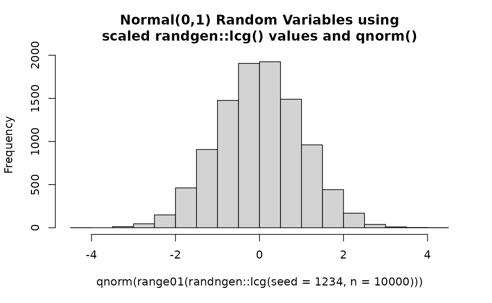
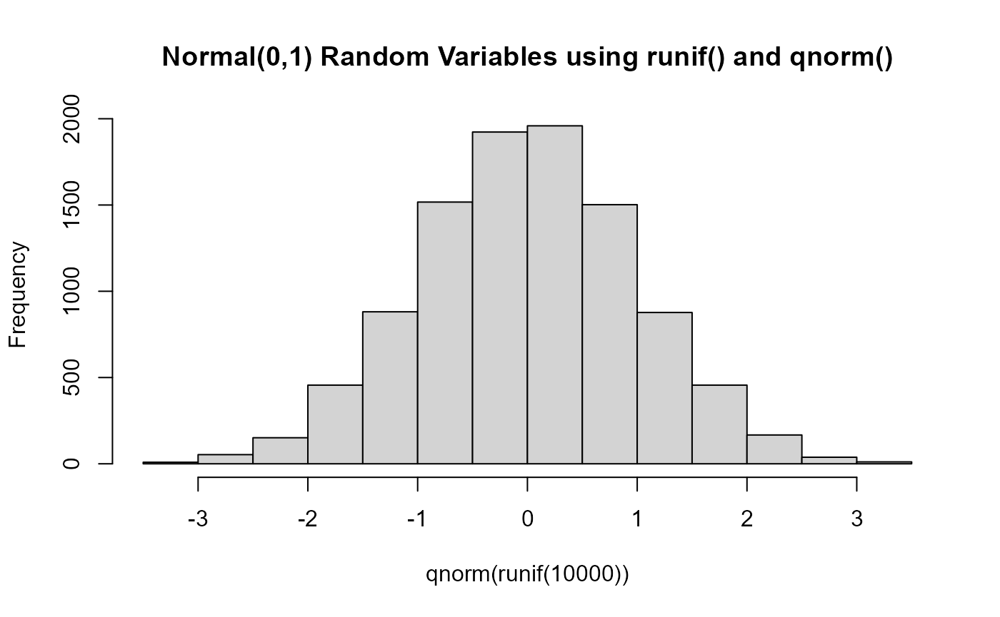

Why use randngen
understanding-prngs.RmdIntroduction
Pseudo-random number generators (PRNGs) power much of what goes on
“behind the scenes” in statistical and cryptographic settings. In
R, there is a pseudo-random number generator present which
allows users to generate random variables from a variety of
distributions. To check the default PRNG used by your R
version you can run the following:
# Using version 4.2.2 (at time of writing)
# Returns the methods used for
# 1. The "default" random number generation,
# 2. Normal variable generation
# 3. Discrete uniform variable generation
RNGkind()
#> [1] "Mersenne-Twister" "Inversion" "Rejection"The PRNG which R utilizes can be specified by specifying a
.Random.seed argument in the beginning of an R script or by
adjusting the default kind (and normal.kind
and sample.kind) arguments in the RNGkind or
set.seed argument.
While it is possible for one to utilize their own PRNG through use of
user-supplied random number generation, such an approach is
pedagogically complex. For users interested in working with and learning
about random number generation, present tools available still leave a
degree of complexity and/or mystery around how random numbers are
generated from the seed(s) and parameters supplied to a given PRNG. The
randngen package provides a suite of PRNGs to which aim to
be easy to use and flexible for understanding the relevant maths and
algorithms implemented by allowing users to specify all relevant
parameters.
From PRNG to Uniform Random Variables (and beyond!)
library(randngen)
# Function from here: https://stackoverflow.com/questions/5468280/scale-a-series-between-two-points
range01 <- function(x){(x-min(x))/(max(x)-min(x))}
randngen::lcg(seed = 1234, n=10000)|>
range01()|>
hist(main= "0-1 Scaled Uniform Random Variables with randgen::lcg()")

Applying the Inverse Probability Transform to Generate Random Variables
library(randngen)
randngen::lcg(seed = 1234, n=10000)|>
range01()|>
qnorm()|>
hist(main= "Normal(0,1) Random Variables using\nscaled randgen::lcg() values and qnorm()")
set.seed(1234)
runif(10000)|>
qnorm()|>
hist(main= "Normal(0,1) Random Variables using runif() and qnorm()")
Other applications
- Simulation studies: use the same PRNG and seed values for your research and not have to worry about
Appendix
R’s history with PRNGs
Disclaimer: This section was copied from output from ChatGPT. I have not found information on this collected in one individual place. However I was told by ChatGPT that it “[…] is well-documented in R’s official NEWS files, which detail changes and new features introduced in each R version …”. If this information is misleading or false, please open an issue or submit a pull request with more accurate information.
R’s base distributions have evolved in their use of Pseudo-Random Number Generators (PRNGs) over time to improve accuracy, speed, and security. Each R version may implement different PRNGs depending on updates, which can impact reproducibility for code across versions. Here’s a summary of the key PRNGs used across different base R versions and the changes introduced over time.
1. Early Versions of R (< R 1.0.0)
- In the earliest versions of R, PRNGs were less standardized and primarily focused on providing simple random number generation for basic statistical analysis.
- These versions used basic implementations of Linear Congruential Generators (LCGs), which are not very robust for high-quality randomness requirements but were adequate for basic applications.
2. R 1.0.0 to R 2.0.0
- PRNG: Mersenne Twister (MT19937) and L’Ecuyer-CMRG
- Details: R 1.0.0 introduced the widely adopted Mersenne Twister algorithm (MT19937), which remains one of the primary generators in many versions of R. It has a period of , making it suitable for many computational tasks due to its very high periodicity.
- Additional: The L’Ecuyer-CMRG generator was also added as an option to allow for multiple independent streams of random numbers, which is useful for parallel processing.
3. R 2.1.0 to R 2.14.0
- PRNG: Default remains Mersenne Twister, with support for L’Ecuyer-CMRG, Super-Duper, and Knuth-TAOCP-2002.
- Details: During these versions, the L’Ecuyer-CMRG (multiple-recursive generator for parallel streams), Super-Duper, and Knuth’s TAOCP-2002 algorithms were added as user-selectable options. Super-Duper and Knuth-TAOCP-2002 are both generators with specific application suitability (e.g., Knuth’s generator was well-suited for sampling due to its statistical robustness).
4. R 2.15.0 to R 3.5.0
- PRNG: Default Mersenne Twister, updated L’Ecuyer-CMRG, and additional options including Marsaglia-Multicarry.
- Details: These versions kept Mersenne Twister as the default generator but improved the L’Ecuyer-CMRG implementation. Marsaglia-Multicarry, a complementary-multiply-with-carry generator, was added as a lightweight, fast alternative.
5. R 3.6.0
- PRNG: Change in sampling algorithm (not the PRNG itself).
-
Details: Starting with R 3.6.0, there was a change
to the sampling algorithm used by functions like
sample(). This update improved randomness in sampling without replacement by ensuring each permutation has equal probability, which impacted reproducibility of code relying on sampling in previous versions. - Impact: While this was not a change to the PRNGs directly, it affected random number generation behavior in R functions, requiring some users to set compatibility options for older scripts.
6. R 4.0.0 Onwards
- PRNG: Default remains Mersenne Twister with support for 64-bit integers.
- Details: The sampling mechanism and random number generation were further refined for 64-bit systems, improving the speed and quality of random number generation on modern hardware.
-
Additional: The
RNGkind()function allows users to set RNG kinds explicitly for reproducibility, with settings such as"Mersenne-Twister","L'Ecuyer-CMRG", and newer options like"Xoroshiro128+"for applications needing faster, non-cryptographic random numbers.
7. R 4.2.0 and Later
- PRNG: Addition of Xoroshiro128+ as an optional generator.
- Details: R 4.2.0 introduced Xoroshiro128+, a PRNG known for being fast and having a reasonable trade-off in terms of randomness quality for applications not requiring cryptographic security. It offers lower memory overhead compared to Mersenne Twister, making it ideal for simulation-heavy tasks.
Summary Table
| R Version | Default PRNG | Other Available PRNGs | Notes |
|---|---|---|---|
| R < 1.0.0 | Basic LCG | - | Simple LCGs with limited randomness quality. |
| R 1.0.0 - 2.0.0 | Mersenne Twister | L’Ecuyer-CMRG | First use of Mersenne Twister as the default PRNG. |
| R 2.1.0 - 2.14.0 | Mersenne Twister | Super-Duper, Knuth-TAOCP-2002 | Additional PRNGs introduced for specific needs. |
| R 2.15.0 - 3.5.0 | Mersenne Twister | Marsaglia-Multicarry, updated L’Ecuyer-CMRG | Added Marsaglia-Multicarry for faster random numbers. |
| R 3.6.0 | Mersenne Twister | - | Updated sampling algorithm for better random permutations. |
| R 4.0.0 - 4.1.0 | Mersenne Twister | L’Ecuyer-CMRG, 64-bit support | 64-bit integer support for PRNGs. |
| R 4.2.0+ | Mersenne Twister | Xoroshiro128+ | Introduced Xoroshiro128+ for faster generation. |
Reproducibility Across Versions
R allows explicit control of the RNG type and seed via
RNGkind() and set.seed(), respectively,
ensuring reproducibility even as PRNG options expand.
References
Random function - RDocumentation. https://www.rdocumentation.org/packages/base/versions/3.6.2/topics/Random.
Morris, T. P., White, I. R. & Crowther, M. J. Using simulation studies to evaluate statistical methods. Statistics in Medicine 38, 2074–2102 (2019).
Generating distributions from random number generators. Cross Validated https://stats.stackexchange.com/questions/637706/generating-distributions-from-random-number-generators.
L’Ecuyer, P. & Simard, R. TestU01. ACM Transactions on Mathematical Software 33, 1–40 (2007).